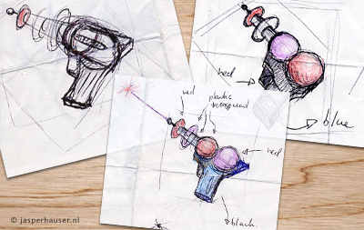
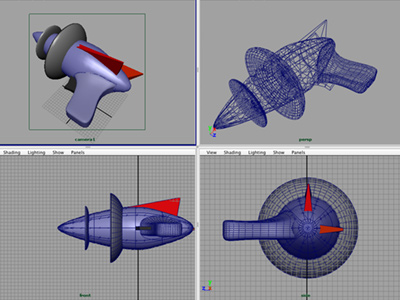
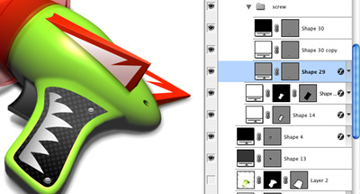

It doesn't happen often that the general public gets an insight in what it takes to create software. I know I really appreciate it when they are offered, I learned a lot from the few I encountered. I might note that CocoaRadio, which started just "recently", is a great resource for behind the scenes interviews of mac developers.
This is my humble attempt to give an insight in my seamingly small and complicated part of the process.
Late 2005 I was contacted by Austin Sarner, a member of a small development company called Neomtric Software I had worked for before, for a new and exciting project.
He and Brian Ball, a talented guy who had worked for MacWorld magazine and who came up with the project idea, teamed up to create a really nice little application called AppZapper.
As one can read on the AppZapper website the application enables users to easily get rid of any file associated to any application you ran and installed on our mac. Like they rightfully say, Apple should have added this tool to Mac OS X all a long. Heck, Microsoft Windows has had a software uninstaller for decades now.
I knew the creation of the icon would be tough as the name of the app and it's function would be very hard to capture in one single image. The name of most applications give a clear indications of what real life like object to use for representation.
I tried a variety of approaches. Non seemed to be very appealing, nor did they convey the fun the AppZapper name contains. In the back of my mind I was thinking of doing a laser gun but what bothered me about that idea was that there didn't seem to be any existing generic representation of a laser gun that I could use! Apart from maybe doing something with a red ray of light. For a brief second I even thought about a taser. Fortunatly I encountered an image of a 60's comic book cover, and then it hit me. I didn't have to look for an actual existing object but instead I had to make it look like a 60's science fiction laser gun, I'm pretty sure we all have a rough idea what that looks like.
It took a lot of sketches before I finally had a shape that appealed to me. Designing 3d eargonomical objects aint easy. After doing some trials in Photoshop I soon enough realized that Photoshop alone wasn't going to get the work done. So I employed a friend of mine, Koen Witlox, who told me he was pretty good with 3d modeling using Maya. We teamed up one night to get the shape modeling done. We started creating what I had sketched but it didn't work aswell as I had hoped. On the spot I sketched some other possibilities and the modeled result, as shown below, was better then we had both hoped for.
3d is a wonderful thing. But it's way to labour intensive if you'd ask me. Not so much the modeling, thats something I will probably teach myself sooner then later. But it's the lighting and texturing that really requires a lot patience and knowledge. If anybody has any tricks or knows somebody that is a master at it, let me know :D
Next step was to get the coloring right in Photoshop, as I decided that doing it in maya was going to be much to complicated. It was harder then I thought, as we had only used one light in Maya. The icon had to be 60's comics style, which I thought I had already achieved with the shape. So I leaned towards using more aqua real life coloring but that didn't work at all. So I went for the more extreme 60's coloring and it worked amazingly well. I know red and green is a bold color combination, but I tried a variety of alternatives and non worked as-well as the final combination.
Even for a relatively small icon like a 128 pixels icon, details make the icon. Lighting direction, highlights, shadows, textures, all have to be looked at. If you don't, the icon will just not be as rich and vibrant. With this icons 40+ layers I was able to tweak any part I wanted. That's why I always tend to create the icons at 256 or in this case 512 pixels so I could scale it down, ensuring that at the final 128 pixels the icon has nice details that can all be controled.
Austin and Brian gave me a lot of time and trust in making this icon, and I worked on it longer then I normally do. But the result of it is a very unique icon in both it's shape, styling, and coloring. And with the effects, the zap sound and white screen flash, Austin added it has become a one of a kind applications with an amazing user experience.